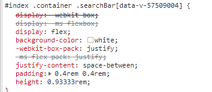

在移动端开发中,不同分辨率的设备所展示的样式也会不同.为了解决这一问题,我们用rem单位替换掉原来的px单位. 已达到移动端自适应的效果
rem
先来简单了解一下rem.
rem（font size of the root element）是指相对于根元素的字体大小的单位。简单的说它就是一个相对单位。看到rem大家一定会想起em单位，em（font size of the element）是指相对于父元素的字体大小的单位。它们之间其实很相似，只不过一个计算的规则是依赖根元素一个是依赖父元素计算。
|
|
如上述代码, html中设置了font-size为20px. 那么根据rem计算规则, .btn中的width:6rem 其实等价于width:120px;
也就是说现在的1rem = 20px. 那么之后我们在开发过程中只需使用rem作为基本单位即可.
这里就会有个问题.我要如何知道根节点中font-size应该设置多少呢?
设置根节点font-size
|
|
只需通过上面的代码.我们既可给html设置对应的font-size值.
自动转换px为rem postcss-pxtorem
现在根节点的值设置好了,我们只需在开发过程中使用rem单位就可以实现自适应了,但是我们常用的是px单位.ui给出的设计稿也是px作为单位.
所以,我们需要一个将px转换为rem单位的东西postcss-pxtorem github地址
这是一个css后置处理器,通过配置.可以将所有的px单位转换成rem. 以便于我们还是按照UI给的设计稿中的px单位进行开发,不用去考虑rem
的转换
Install
首先安装 postcss-pxtorem
|
|
vue-cli 配置
根目录下 配置.postcssrc.js文件
|
|
配置完成后在css编写过程中,依旧使用px作为单位.pxtorem会自动帮我们转换.
如下图

